Sumário
Fração
1. O que é?
Fração é a forma de dividir alguma coisa através da razão de dois números inteiros. Onde o primeiro número será o numerador e o segundo o denominador.
Exemplos:
Exemplos de Fração
1.1 Situação:
Quando precisamos contar uma pizza, estamos fracionando-a de forma que todos os pedaços “tenham” o mesmo tamanho. Geralmente ela é cortada em vários pedaços, e cada pedaços terá uma representação fracionária. Podemos citar como exemplo uma pizza que é cortada em 8 pedaços, e cada pedaço representa um oitavo(⅛) da pizza.
Exemplos
2. Representação
A fração pode ser representada através da escrita em números ou de forma visual para se ter um melhor entendimento, o mais comum das representações visuais sãos os gráficos.
Representação Escrita:
“a” é o numerador e “b” o denominador.
Representação Visual:
3. Operações
As frações são trabalhadas com as operações básicas de soma, subtração, divisão e multiplicação.
3.1 Soma e Subtração:
3.2 Divisão:
3.3 Multiplicação:
4. Tipos de frações
4.1 Frações Equivalentes:
Frações equivalentes são frações que representam a mesma quantidade. Então se quisermos encontrar as frações que são equivalentes a outras, basta multiplicar o numerador e denominador pelo mesmo número natural que seja diferente de zero.
Exemplo:
Para encontrar frações equivalentes para ⅓.
Para verificar se duas frações são equivalentes, devemos multiplicá-las de forma cruzada.
Como exemplo vamos verificar se ⅓ é equivalente a 5/15.

4.2 Frações Próprias e Impróprias:
Chamamos de frações próprias quando o numerador é menor que o denominador.
Exemplo: 3/10.
E de impróprias quando o numerador é maior que o denominador.
Exemplo: 10/3.
4.3 Frações Aparentes:
São frações onde o numerador é múltiplo do denominador.
Exemplo: 9⁄3, 6⁄2, 20⁄5, etc.
4.4 Frações Mistas:
São frações onde parte dela é um número inteiro e a outra parte é uma fração.
Exemplo:
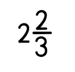, é equivalente a 8⁄3.
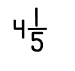é equivalente a 21⁄5
4.5 Frações Compostas ou complexas:
Frações compostas ou complexas são frações onde o numerador e o denominador também são frações.
Exemplo:
4.6 Frações Unitárias:
Frações unitárias sãos frações onde o numerador é o número 1 e o denominador pode ser qualquer valor inteiro maior que zero.
Exemplo: 1⁄5, 1⁄100, etc.
4.7 Frações Decimais:
Frações decimais são frações onde o denominador é uma potência positiva de 10 e estas frações podem ser representadas também na forma decimal.
Exemplos:
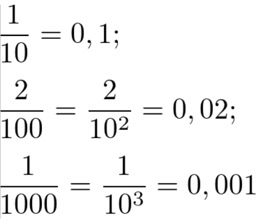4.8 Frações Ordinárias:
Frações Ordinárias são frações da forma , onde a é um inteiro qualquer e b um inteiro diferente de 0 (zero).
Exemplo: –10⁄3, 2⁄5, etc
5. Conversão de Frações Mistas e Impróprias
5.1 Conversão de fração imprópria em fração mista:
Para transformar uma fração imprópria em uma mista, basta dividir a fração pelo denominador, sendo que a parte inteira será o quociente, o resto será o numerador e o divisor será o denominador.
Exemplo: Considere a fração imprópria 21⁄5.
Dessa forma, o quociente 4 vira a parte inteira, o resto 1, o numerador, e o divisor 5 será o denominador. Assim, temos a fração mista.
equivalente a 21⁄5.
5.2 Conversão de fração mista em fração imprópria:
Para fazer o processo inverso, isto é, transformar a fração mista em uma imprópria, basta conservar o denominador, depois multiplicá-lo pela parte inteira e somar com o numerador.
Exemplo:
Considere a fração mista do exemplo anterior
vamos transformá-la de volta para 21⁄5. Dessa forma, conservamos o denominador 5, multiplicamos o denominador 5 por 4 e somamos com o numerador 1. Veja:
6. Simplificação de Frações e Frações Irredutíveis
Simplificação de frações é uma redução da fração original em outra fração equivalente com números menores. Para simplificar uma fração temos que dividir o numerador e o denominador da fração pelo máximo divisor comum aos números em questão. Quando temos uma fração com valores altos no numerador e denominador podemos simplificá-la encontrando uma fração equivalente com valores menores e irredutível.
A simplificação ajuda na resolução de problemas complexos, de forma que encontremos a solução mais rapidamente. Vamos entender com um exemplo:
Considere a fração 20⁄100. Podemos simplificá-la dividindo o numerador e denominador pelo mesmo valor, esse valor é o máximo divisor comum, o MDC de 20 e 100 é 20:
Dessa forma, 1⁄5 é uma fração equivalente e simplificada de 20⁄100, também chamada de fração irredutível, isto é, não é mais possível reduzi-la, simplificá-la.
7. Comparação de frações
7.1 Denominadores iguais:
Se os denominadores forem iguais basta analisar o numerador.
Exemplo:
Considerem-se as frações: 3⁄5 e 1⁄5
Os denominadores são iguais, então vamos analisar somente os numeradores. Então, como 3 é maior que 1, assim:
Podemos entender assim: considere um bolo dividido em 5 pedaços. Se eu comer 3 pedaços e meu irmão comer 1 pedaço, então eu comi mais que ele. Logo: 3⁄5 maior que 1⁄5.
7.2 Denominadores Diferentes:
Se os denominadores forem diferentes temos que utilizar uma regra que faz com que as frações fiquem com denominadores iguais e possamos utilizar o caso anterior.
Vamos utilizar como exemplo as frações 5/2 e 7/3. Elas possuem denominadores diferentes e não podemos utilizar o caso anterior. Para transformá-las em frações com denominadores iguais, pegamos o denominador de uma fração e multiplicamos na outra: 5⁄2 tem denominador 2, vamos multiplicar 7⁄3 por 2; 7⁄3 tem denominador 3, vamos multiplicar 5⁄2 por 3;
Portanto,
Dessa forma, temos duas frações com denominadores iguais e podemos utilizar o primeiro caso. Então, temos que
Exercicio Resolvido
Potenciação
1. O que é?
Potenciação é uma operação que surge a partir da multiplicação de fatores iguais como uma alternativa para simplificar a notação.
Seja a multiplicação 2 . 2 . 2 . 2, onde todos os fatores são iguais. Podemos indicar este produto de modo abreviado:
2 . 2 . 2 . 2 = 24 = 16Denominamos:
Base: o número que se repete.
Expoente: o número de fatores iguais.
Potência: o resultado da operação.
A operação efetuada é denominada potenciação.
Leitura da potenciação
Observe alguns exemplos:
3² (lê-se “três elevado ao quadrado ou o quadrado de três”)
2³ (lê-se “dois elevado ao cubo ou o cubo de dois”)
Radiciação
1. O que é?
A Radiciação é o processo inverso da potenciação, onde a raíz n de 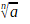= b pode ser da forma 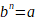.
Exemplos: 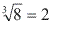, pois 2³ = 8; 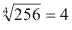, pois 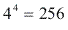.
Sendo assim: 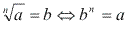
2. Notação
3. Leitura
 (lê-se “raiz quadrada de 81”)
(lê-se “raiz quadrada de 81”)
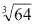(lê-se “raiz cúbica de 64”)
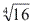(lê-se “raiz quarta de 16”)
Observação:
Na indicação de raiz quadrada, podemos omitir o índice 2. Por exemplo, 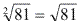.
4. Raízes de índice Par
Quando elevamos um número positivo ou um número negativo a um expoente par, o resultado sempre é um número positivo.
Exemplo:
(-4)² = (-4)(-4) = 16
e
(+4)² = (+4)(+4) = 16
Porém, como em matemática o resultado de uma operação deve ser único, fica definido que:
Genericamente:
Qualquer raiz de índice par de um número positivo é o número positivo que elevado ao expoente correspondente a esse índice equivale ao número dado.
Observação:
Não existe raiz real de um número negativo se o índice for par.
Exemplo:
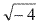não existe, pois não há nenhum número real que elevado ao quadrado dê - 4.
5. Raízes de índice ímpar
Quando o índice de uma raiz é ímpar e o radicando é positivo, a raiz é positiva.
Quando o índice de uma raíz é ímpar e o radicando é negativo, a raiz é negativa.
Exemplos:
Produtos Notáveis
1. O que é?
Produtos notáveis são multiplicações em que os fatores são polinômios. Existem cinco produtos notáveis mais relevantes: quadrado da soma, quadrado da diferença, produto da soma pela diferença, cubo da soma e cubo da diferença.
2. Quadrado da Soma
Os produtos entre polinômios conhecidos como quadrados da soma são os do tipo:
(x + a)(x + a)
O nome quadrado da soma é dado porque a representação por potência desse produto é a seguinte:
(x + a)2
A solução desse produto notável sempre será o polinômio a seguir:
(x + a)2 = x2 + 2xa + a2
Esse polinômio é obtido por meio da aplicação da propriedade distributiva da seguinte maneira:
(x + a)2 = (x + a)(x + a) = x2 + xa + ax + a2 = x2 + 2xa + a2
O resultado final desse produto notável pode ser usado como fórmula para qualquer hipótese em que houver uma soma elevada ao quadrado. Geralmente, esse resultado é ensinado da seguinte maneira:
O quadrado do primeiro termo mais duas vezes o primeiro vezes o segundo mais o quadrado do segundo termo
Exemplo:
(x + 7)2 = x2 + 2x7 + 49 = x2 + 14x + 49
Observe que esse resultado é obtido pela aplicação da propriedade distributiva em (x + 7)2. Portanto, a fórmula é obtida a partir da propriedade distributiva sobre (x + a)(x + a).3. Quadrado da Diferença
O quadrado da diferença é o seguinte:
(x – a)(x – a)
Esse produto pode ser escrito da seguinte maneira por meio da notação de potências:
(x – a)2
O seu resultado é o seguinte:
(x – a)2 = x2 – 2xa + a2
Perceba que a única diferença entre os resultados do quadrado da soma e da diferença é um sinal negativo no termo do meio.
Geralmente, esse produto notável é ensinado da seguinte maneira:
O quadrado do primeiro termo menos duas vezes o primeiro vezes o segundo mais o quadrado do segundo termo.
Não pare agora... Tem mais depois da publicidade ;)
4. Produto da Soma Pela Diferença
É o produto notável que envolve um fator com uma soma e outro com uma subtração. Exemplo:
(x + a)(x – a)
Não há representação em forma de potência para esse caso, mas sua solução sempre será determinada pela seguinte expressão, também obtida com a técnica do quadrado da soma:
(x + a)(x – a) = x2 – a2
Como exemplo, vamos calcular (xy + 4)(xy – 4).
(xy + 4)(xy – 4) = (xy)2 – 162
Esse produto notável é ensinado da seguinte maneira:
O quadrado do primeiro termo menos o quadrado do segundo termo.
5. Cubo da Soma
Com a propriedade distributiva, é possível criar uma “fórmula” também para produtos com o seguinte formato:
(x + a)(x + a)(x + a)
Na notação de potência, ele é escrito da seguinte maneira:
(x + a)3
Por meio da propriedade distributiva e simplificando o resultado, encontraremos o seguinte para esse produto notável:
(x + a)3 = x3 + 3x2a + 3xa2 + a3
Assim, em vez de fazer um cálculo extenso e cansativo, podemos calcular (x + 5)3, por exemplo, facilmente da seguinte maneira:
(x + 5)3 = x3 + 3x25 + 3x52 + 53 = x3 + 15x2 + 75x + 125
5. Cubo da diferença
O cubo da diferença é o produto entre os seguintes polinômios:
(x – a)(x – a)(x – a)
Por meio da propriedade distributiva e simplificando os resultados, encontraremos o seguinte resultado para esse produto:
(x – a)3 = x3 – 3x2a + 3xa2 – a3
Vamos calcular como exemplo o seguinte cubo da diferença:
(x – 2y)3
(x – 2y)3 = x3 – 3x22y + 3x(2y)2 – (2y)3 = x3 – 3x22y + 3x4y2 – 8y3 = x3 – 6x2y + 12xy2 – 8y3>